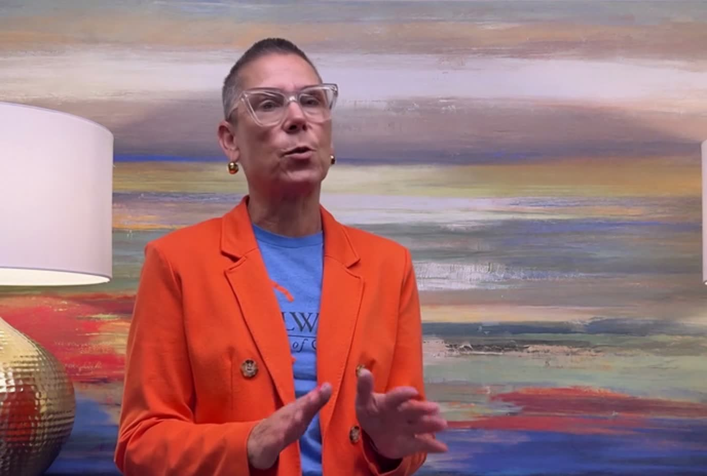

A face or voice you trust tells you what to do. Your Chamber president. Your boss. Your banker.
Something you’d never normally give up. A favorite child today. Your bank login tomorrow.
“Do it now, before it’s too late.” The rush is on purpose. It’s there to stop you thinking.